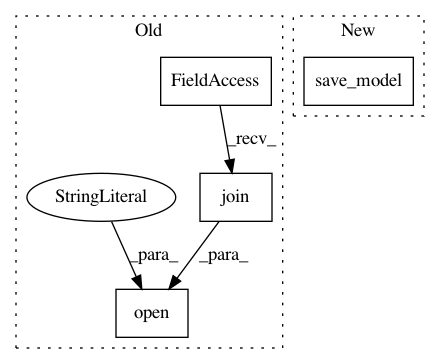

907a86e9c4af4ad476c9d4a7201f87f01b835f0d,train.py,,,#,15
Before Change
if ac_rl.use_gpu:
policy_net.cpu(), value_net.cpu()
pickle.dump((policy_net, value_net),
open(os.path.join(assets_dir(), "learned_models/{}_{}.pt".format(args.env, args.algo)), "wb"))
if ac_rl.use_gpu:
policy_net.cuda(), value_net.cuda()
After Change
save models
if args.save_model_interval > 0 and i > 0 and i % args.save_model_interval == 0:
save_model(policy_net, value_net, model_path)
In pattern: SUPERPATTERN
Frequency: 3
Non-data size: 4
Instances
Project Name: lcswillems/torch-rl
Commit Name: 907a86e9c4af4ad476c9d4a7201f87f01b835f0d
Time: 2018-04-14
Author: lcswillems@gmail.com
File Name: train.py
Class Name:
Method Name:
Project Name: automl/auto-sklearn
Commit Name: 838f3aa207070d7f8f02f529a5f45076e0caab66
Time: 2015-10-01
Author: feurerm@informatik.uni-freiburg.de
File Name: autosklearn/cli/base_interface.py
Class Name:
Method Name: make_mode_holdout
Project Name: automl/auto-sklearn
Commit Name: 838f3aa207070d7f8f02f529a5f45076e0caab66
Time: 2015-10-01
Author: feurerm@informatik.uni-freiburg.de
File Name: autosklearn/automl.py
Class Name: AutoML
Method Name: _do_dummy_prediction